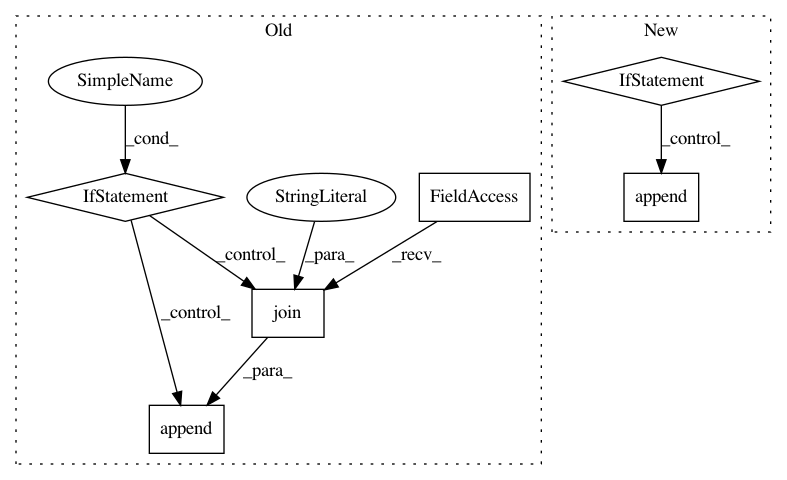

4c07803bccf4096b6458bb88d877b88700fa194c,PyInstaller/hooks/hook-numpy.py,,,#,22
Before Change
//excludedimports = ["numpy.testing"]
// FIXME check if this workaround is still necessary!
if is_win:
from PyInstaller.utils.win32.winutils import extend_system_path
from distutils.sysconfig import get_python_lib
// SciPy/Numpy Windows builds from http://www.lfd.uci.edu/~gohlke/pythonlibs
// contain some dlls in directory like C:\Python27\Lib\site-packages\numpy\core\
numpy_core_paths = [os.path.join(get_python_lib(), "numpy", "core")]
// In virtualenv numpy might be installed directly in real prefix path.
// Then include this path too.
if is_venv:
numpy_core_paths.append(
os.path.join(base_prefix, "Lib", "site-packages", "numpy", "core")
)
extend_system_path(numpy_core_paths)
del numpy_core_paths
// if we bundle the testing module, this will cause
// `scipy` to be pulled in unintentionally but numpy imports
// numpy.testing at the top level for historical reasons.
// excludedimports = collect_submodules("numpy.testing")
binaries = []
// package the DLL bundle that official numpy wheels for Windows ship
// The DLL bundle will either be in extra-dll on windows proper
After Change
// Submodules PyInstaller can"t detect (probably because they"re only imported
// by extension modules which PyInstaller can"t read).
hiddenimports = ["numpy.core._dtype_ctypes"]
if is_conda:
hiddenimports.append("six")
// Remove testing and building code and packages which are referenced throughout
// NumPy but aren"t really dependencies.
excludedimports = [
"scipy",
"pytest",
"nose",
In pattern: SUPERPATTERN
Frequency: 3
Non-data size: 6
Instances
Project Name: pyinstaller/pyinstaller
Commit Name: 4c07803bccf4096b6458bb88d877b88700fa194c
Time: 2021-01-27
Author: 30940778+bwoodsend@users.noreply.github.com
File Name: PyInstaller/hooks/hook-numpy.py
Class Name:
Method Name:
Project Name: pyinstaller/pyinstaller
Commit Name: 06c181beaaca9b1f01714a327d366584c03855d5
Time: 2020-09-30
Author: rok.mandeljc@gmail.com
File Name: PyInstaller/hooks/hook-PySide2.QtWebEngineWidgets.py
Class Name:
Method Name:
Project Name: pyinstaller/pyinstaller
Commit Name: 06c181beaaca9b1f01714a327d366584c03855d5
Time: 2020-09-30
Author: rok.mandeljc@gmail.com
File Name: PyInstaller/hooks/hook-PyQt5.QtWebEngineWidgets.py
Class Name:
Method Name: